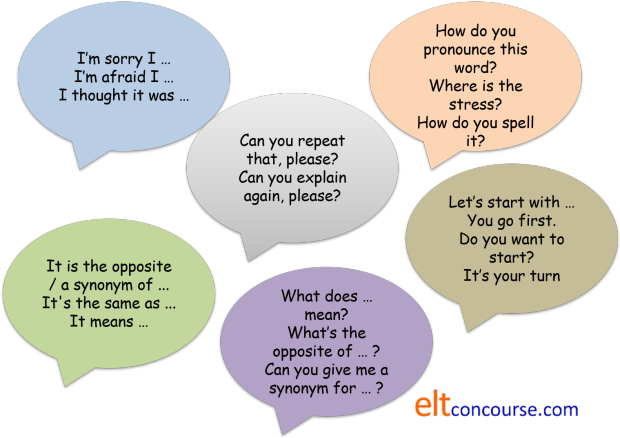

Learner talk
Teachers, of course, have to able to communicate lots of ideas
and express functions in the classroom. There is an associated
guide to teacher talk
on this site (new tab).
Learners, too, need to be able to function communicatively in the
classroom and they need to have the resources to do that.
 |
What do learners need to be able to do in the classroom? |
If learners are to get the most from your classroom, they need to
have some control. Controlling what happens to you is mostly
to do with using language appropriately.
In the classroom, this is called metalanguage because it only has a
classroom function. Most of the exponents can, however, be
used in other settings.
 |
Task 1:
What kinds of things do learners need to get done: – with each other? – with the teacher? When you have thought of a short list, check here. |
-
With each other:
- Telling and explaining: often, you want learners to help each other so they need to know how to impart information appropriately
- Starting a task: in pair- and group-work, this is often quite difficult
- Asking each other what they think and saying what they think: getting and giving opinions
- Agreeing and disagreeing: politely!
- Encouraging each other: motivating etc.
-
With the teacher:
- Asking questions about: meaning, form, pronunciation
- Asking for clarification
- Asking for repetition
- Asking for permission (to leave the room, be late etc.)
- Expressing doubt
- Apologising
- Explaining
At more advanced levels, most learners are able to do all of this quite appropriately most of the time. However, especially (but not only) at lower levels, these functions and their exponents need to be taught.
| Function | Possible exponents (lower level) | Possible exponents (higher level) |
| What learners need to use language for with classmates | ||
|
telling and explaining |
|
|
|
starting a task |
|
|
|
asking about / giving opinions |
|
|
|
agreeing and disagreeing |
|
|
|
encouraging |
|
|
| What learners need to use language for when interacting with the teacher | ||
|
asking questions about: meaning, form, pronunciation |
|
|
|
asking for clarification |
|
|
|
asking for repetition |
|
|
|
apologising |
|
|
|
explaining |
|
|
 |
Teaching the exponents |
This can't all be done at once.
Before you set a task in pairs or groups, check that the learners
have the metalanguage to be able to negotiate with each other and
ask questions.
Nearly all of these exponents can be taught as language chunks
without spending time explaining the meanings of all the words or
delving too far into the grammar.
One idea is to have a classroom poster which is permanently on display and which you can use to practise polite intonation and other pronunciation features. Like this (the are called 'class callouts', by the way):

This can, of course, be extended almost indefinitely with many other exponents of all the functions listed above added as time goes by.
Matching the task and the language |
It is worth considering, at the planning stage, what metalanguage
your learners will need to complete the tasks you plan to set.
You need to assure yourself that the learners can focus on the task
and its associated skills or language without the distraction of
hunting for the language to do it.
Here are some examples:
- Controlled language tasks
- These sorts of tasks are generally set to check that
learning of the targets is adequate before you go on to getting
the learners to use the language or skill in a freer, more
personalised way. If tasks like these are done in pairs or
small groups, the learners need to be able to:
- Say what they think the
right answer is:
I thought it was ...
I think it's ...
The right answer is ... I think - Explain their reasoning:
It must be ... because it's the only one that ...
I know the plural is irregular so I think it's ...
This is the only preposition we haven't used so far - Inform and explain:
Only one answer is correct so it must be ...
This picture goes with the sentence about ... because that's ...
The past participle is "known" not "knew" - Accept other people's views:
OK. Let's choose ...
If you say so
Yes, I agree with that - Reject other people's views:
I don't think that's right because ...
No, that can't be right
I'm not so sure
- Say what they think the
right answer is:
- Role plays
- Most role plays are semi-controlled practice so once
started, the learners need only to use the target exponents
(providing they know what they are) and less metalanguage will
be needed. However, they will have to:
- Decide how to start:
Who speaks first?
Student A speaks first so you start
I'll go first - Repair:
Now you need to ask another question about Spain
Don't stop there
I think I have to say something now - Ask for clarification:
What does ... mean?
I don't understand what you mean
Can you repeat that? - End the task:
OK. Let's stop now
That was good
- Decide how to start:
- Freer practice
- Free(r) oral practice often involves learners personalising
the language and communicating something to others that they
don't know using a language system or skill they have been
learning.
Whatever the targets of the lesson, however, learners will almost certainly need to:- Introduce it:
I once had a terrible holiday experience
This is what I think
If you ask me, ... - Back channel (usually to
show interest):
Uh Huh.
Wow!
Go on - Give up a turn:
What's your story?
Do you have an idea?
It's your turn to tell us something now - Resist an interruption:
OK. Let me finish
Just a moment
Yes, I am coming to that - Clarify and exemplify:
What I mean is ...
For example, ...
In other words, ... - Hold the floor:
I have three ideas: a) ...
Hear me out
I can see two problems with this. Firstly, ...
- Introduce it:
Learners can't, of course, be expected to do these things
successfully unless the sorts of metalanguage they need to complete
tasks have been taught and practised. Even when it has,
learners will often need reminding of the exponents before the
activities begin.
By the way, there is a guide to teacher
roles on this site that explains what you should be doing while
these activities are happening.
 |
Self-test questions |
- What is a class callout?
- Give two examples of how a learner may ask for clarification.
- What do learners have to do in controlled practice tasks?
| Related guides | |
| teacher roles | for the guide to the many roles a teacher may need to adopt |
| teacher talk | for a guide to the other side of the equation: the teacher's language |
| asking good questions | questioning is a key teaching skill but there's a bit more to it than just asking for information |
| being clear | for some advice about getting your message across clearly, simply and unambiguously |